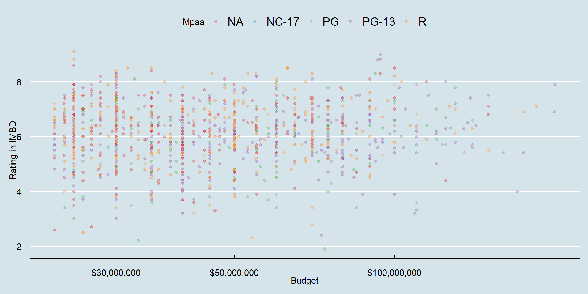

Analítica de Datos
tidyverse y ggplot
Carlos Cardona Andrade
Tabla de contenido
Programación orientada a objetos en R
Algunos fundamentos básicos de R
Todo es un objeto.
Todo objeto tiene un nombre.
Todo se opera usando funciones.
Las funciones existen dentro de paquetes (i.e. “libraries”), aunque ustedes pueden escribir sus propias funciones.
Puntos 1. y 2. pueden ser resumidos como un enfoque de programación orientada a objetos (OOP).Esto puede sonar super abstracto ahora, pero veremos muchos ejemplos en las próximas semanas que harán todo más claro.
Qué son objetos?
Es importante enfatizar que hay muchos tipos (o clases) diferentes de objetos.
Algunos objetos con los que trabajaremos regularmente son:
- vectores
- matrices
- data grames
- listas
- funciones
- etc.
Paquetes en Tidyverse
Carguemos el meta-paquete tidyverse y veamos la salida.
Vemos que efectivamente hemos cargado una serie de paquetes (que también podrían cargarse individualmente): ggplot2, tibble, dplyr, etc.
Qué es “tidy” data?
- Recursos:
- Paquete tidyr
- Paper original (Hadley Wickham, 2014 JSS)
- Puntos clave:
- Cada variable forma una columna.
- Cada observación forma una fila.
- Cada tipo de unidad de observación forma una tabla.
Qué es “tidy” data?
Todas las familias felices se parecen unas a otras, pero cada familia infeliz lo es a su manera - León Tolstói
Al igual que las familias, los conjuntos de datos “tidy” son todos iguales, pero cada conjunto de datos desordenado es desordenado a su manera.
¿Por qué “tidy”?
Un conjunto de datos en forma tidy facilita la selección de variables, la agrupación, el resumen y la visualización.
Algunas herramientas y paquetes en el tidyverse como dplyr o ggplot2 requieren que los datos se organicen de esa manera
El problema: la mayoría de los datos que obtengan no estarán “ordenados” desde el principio -> tendrá que remodelarlos
Los paquetes de hoy
Una vez los paquetes están instalados, cárguenlos a su sesión en R con la función library().
Base de datos “movies”
Dado que manipularemos los datos movies, es importante saber que contiene información de películas como su presupuesto, duración, rating y votos en IMBD y el tipo de película desde 1892.
# A tibble: 5 x 24
title year length budget rating votes r1 r2 r3 r4 r5 r6
<chr> <int> <int> <int> <dbl> <int> <dbl> <dbl> <dbl> <dbl> <dbl> <dbl>
1 Spider-M~ 2004 127 2 e8 7.9 40256 4.5 4.5 4.5 4.5 4.5 4.5
2 Titanic 1997 194 2 e8 6.9 90195 14.5 4.5 4.5 4.5 4.5 4.5
3 Troy 2004 162 1.85e8 7.1 33979 4.5 4.5 4.5 4.5 4.5 14.5
4 Terminat~ 2003 109 1.75e8 6.9 32111 4.5 4.5 4.5 4.5 4.5 14.5
5 Waterwor~ 1995 176 1.75e8 5.4 19325 4.5 4.5 4.5 14.5 14.5 14.5
# i 12 more variables: r7 <dbl>, r8 <dbl>, r9 <dbl>, r10 <dbl>, mpaa <chr>,
# Action <int>, Animation <int>, Comedy <int>, Drama <int>,
# Documentary <int>, Romance <int>, Short <int>Un aparte sobre el “pipe operator”: %>%
Quiero reiterar lo funcional que es el pipe operator y cómo su uso puede mejorar drásticamente la experiencia de lectura y escritura de código. Comparar:
La primera línea se lee de izquierda a derecha, exactamente como uno pensaría las operaciones.
- Toma este objeto (
top1000), haz esto (filter), luego haz esto (group_by), etc.
La segunda línea invierte totalmente este orden lógico (¡la operación final viene primero!)
- ¿Quién quiere leer las cosas al revés?
Un aparte sobre el “pipe operator”: %>%
La versión anclada (“piped”) del código es aún más legible si la escribimos en varias líneas. Aquí está de nuevo pero con la salida de R:
# A tibble: 4 x 2
mpaa budget_mean
<chr> <dbl>
1 "" 44315612.
2 "PG" 66044118.
3 "PG-13" 65333596.
4 "R" 50717308.Recuerden: usar espacio vertical no cuesta nada y genera un código mucho más legible y fácil de escribir que amontonar cosas horizontalmente.
Asignación
En R, podemos usar <- o = para manejar la asignación de objetos.
Nota: un atajo para escribir el operador <- es Alt + -.
Asignación
¿Cuál operador usar?
La mayoría de los usuarios de R (¿puristas?) parecen preferir <- para la asignación, ya que = también tiene un rol específico para la evaluación dentro de las funciones.
Tidyverse:
dplyr
Key dplyr verbs
Hay 5 verbos claves en el paquete dplyr que necesitan aprender:
filter: Filtra (i.e. subset) filas basado en los valores de estas.arrange: ordena (i.e. reordenar) filas basado en sus valores.select: selecciona (i.e. subset) columnas por nombre:mutate: crea nuevas columnas.summarise: colapsa múltiples filas en un único valor que resume la información.
1) dplyr::filter
Podemos encadenar múltiples comandos de filtro con el pipe (), o simplemente separarlos dentro de un solo comando de filtro usando comas.
# A tibble: 8 x 24
title year length budget rating votes r1 r2 r3 r4 r5 r6
<chr> <int> <int> <int> <dbl> <int> <dbl> <dbl> <dbl> <dbl> <dbl> <dbl>
1 Gladiat~ 2000 155 1.03e8 8 92495 4.5 4.5 4.5 4.5 4.5 4.5
2 Last Sa~ 2003 154 1 e8 7.9 31668 4.5 4.5 4.5 4.5 4.5 4.5
3 Termina~ 1991 154 1 e8 8.2 77614 4.5 4.5 4.5 4.5 4.5 4.5
4 Black H~ 2001 142 9 e7 7.6 32530 4.5 4.5 4.5 4.5 4.5 4.5
5 Road to~ 2002 117 8 e7 7.7 30526 4.5 4.5 4.5 4.5 4.5 4.5
6 Saving ~ 1998 170 7 e7 8.3 100267 4.5 4.5 4.5 4.5 4.5 4.5
7 Insider~ 1999 157 6.80e7 8 28780 4.5 4.5 4.5 4.5 4.5 4.5
8 Collate~ 2004 120 6.5 e7 7.7 24499 4.5 4.5 4.5 4.5 4.5 4.5
# i 12 more variables: r7 <dbl>, r8 <dbl>, r9 <dbl>, r10 <dbl>, mpaa <chr>,
# Action <int>, Animation <int>, Comedy <int>, Drama <int>,
# Documentary <int>, Romance <int>, Short <int>1) dplyr::filter cont.
Las expresiones regulares también funcionan dentro del comando.
# A tibble: 2 x 24
title year length budget rating votes r1 r2 r3 r4 r5 r6
<chr> <int> <int> <int> <dbl> <int> <dbl> <dbl> <dbl> <dbl> <dbl> <dbl>
1 Terminat~ 2003 109 1.75e8 6.9 32111 4.5 4.5 4.5 4.5 4.5 14.5
2 Terminat~ 1991 154 1 e8 8.2 77614 4.5 4.5 4.5 4.5 4.5 4.5
# i 12 more variables: r7 <dbl>, r8 <dbl>, r9 <dbl>, r10 <dbl>, mpaa <chr>,
# Action <int>, Animation <int>, Comedy <int>, Drama <int>,
# Documentary <int>, Romance <int>, Short <int>1) dplyr::filter cont.
Un uso muy común de filter es identificar (o eliminar) casos con valores faltantes (missings).
# A tibble: 3 x 24
title year length budget rating votes r1 r2 r3 r4 r5 r6
<chr> <int> <int> <int> <dbl> <int> <dbl> <dbl> <dbl> <dbl> <dbl> <dbl>
1 $ 1971 121 NA 6.4 348 4.5 4.5 4.5 4.5 14.5 24.5
2 $1000 a ~ 1939 71 NA 6 20 0 14.5 4.5 24.5 14.5 14.5
3 $21 a Da~ 1941 7 NA 8.2 5 0 0 0 0 0 24.5
# i 12 more variables: r7 <dbl>, r8 <dbl>, r9 <dbl>, r10 <dbl>, mpaa <chr>,
# Action <int>, Animation <int>, Comedy <int>, Drama <int>,
# Documentary <int>, Romance <int>, Short <int>Para eliminar valores faltantes, simplemente usen la negación: filter(!is.na(budget)). Inténtenlo ustedes.
2) dplyr::arrange
# A tibble: 5 x 24
title year length budget rating votes r1 r2 r3 r4 r5 r6
<chr> <int> <int> <int> <dbl> <int> <dbl> <dbl> <dbl> <dbl> <dbl> <dbl>
1 Cleopatra 1963 320 4.40e7 6.6 2612 4.5 4.5 4.5 4.5 4.5 14.5
2 Voyna i ~ 1968 390 1 e8 8.5 416 4.5 4.5 4.5 4.5 4.5 4.5
3 Hello, D~ 1969 146 2.5 e7 6.3 1499 4.5 4.5 4.5 4.5 14.5 14.5
4 Darling ~ 1970 107 2.5 e7 5.9 287 4.5 4.5 4.5 4.5 14.5 14.5
5 Tora! To~ 1970 144 2.5 e7 7.4 3663 4.5 4.5 4.5 4.5 4.5 4.5
# i 12 more variables: r7 <dbl>, r8 <dbl>, r9 <dbl>, r10 <dbl>, mpaa <chr>,
# Action <int>, Animation <int>, Comedy <int>, Drama <int>,
# Documentary <int>, Romance <int>, Short <int>
Note: Si se organiza una variable basado en caracteres, se ordenarán alfabéticamente. Intenten ordenando según la variable “title”.
2) dplyr::arrange cont.
También podemos organizar los elementos en orden descendente utilizando arrange(desc()).
# A tibble: 8 x 24
title year length budget rating votes r1 r2 r3 r4 r5 r6
<chr> <int> <int> <int> <dbl> <int> <dbl> <dbl> <dbl> <dbl> <dbl> <dbl>
1 Kingdom ~ 2005 145 1.3 e8 7 6498 4.5 4.5 4.5 4.5 4.5 4.5
2 Sahara 2005 124 1.3 e8 5.8 3004 4.5 4.5 4.5 4.5 4.5 14.5
3 Constant~ 2005 121 1 e8 6.4 11633 4.5 4.5 4.5 4.5 4.5 14.5
4 xXx: Sta~ 2005 101 8.70e7 3.9 1584 24.5 4.5 4.5 4.5 4.5 14.5
5 Interpre~ 2005 128 8 e7 6.6 4678 4.5 4.5 4.5 4.5 4.5 14.5
6 Robots 2005 91 7.5 e7 6.4 4089 4.5 4.5 4.5 4.5 4.5 14.5
7 Son of t~ 2005 94 7.4 e7 1.9 1785 74.5 4.5 4.5 4.5 4.5 4.5
8 Hitch 2005 118 7 e7 6.8 7554 4.5 4.5 4.5 4.5 4.5 14.5
# i 12 more variables: r7 <dbl>, r8 <dbl>, r9 <dbl>, r10 <dbl>, mpaa <chr>,
# Action <int>, Animation <int>, Comedy <int>, Drama <int>,
# Documentary <int>, Romance <int>, Short <int>3) dplyr::select
Utilicen comas para seleccionar varias columnas de una base de datos (usen “first:last” para columnas consecutivas). Anulen la selección de una columna con “-”.
# A tibble: 1,000 x 7
title year length budget rating votes mpaa
<chr> <int> <int> <int> <dbl> <int> <chr>
1 Spider-Man 2 2004 127 2 e8 7.9 40256 "PG-~
2 Titanic 1997 194 2 e8 6.9 90195 "PG-~
3 Troy 2004 162 1.85e8 7.1 33979 "R"
4 Terminator 3: Rise of the Machines 2003 109 1.75e8 6.9 32111 "R"
5 Waterworld 1995 176 1.75e8 5.4 19325 "PG-~
6 Wild Wild West 1999 107 1.7 e8 4 19078 "PG-~
7 Van Helsing 2004 132 1.6 e8 5.4 19787 "PG-~
8 Alexander 2004 175 1.5 e8 5.5 11254 "R"
9 Master and Commander: The Far Side of~ 2003 138 1.5 e8 7.5 21328 "PG-~
10 Polar Express, The 2004 99 1.5 e8 6.8 4045 ""
# i 990 more rows3) dplyr::select cont.
También puede cambiar el nombre de algunas (o todas) de las variables seleccionadas.
# A tibble: 5 x 3
name duration imbd_votes
<chr> <int> <int>
1 Spider-Man 2 127 40256
2 Titanic 194 90195
3 Troy 162 33979
4 Terminator 3: Rise of the Machines 109 32111
5 Waterworld 176 19325Si solo desean cambiar el nombre de las columnas sin seleccionarlas, pueden utilizar. rename. Prueben esto ahora reemplazando select(...) en el fragmento de código anterior por rename(...).
3) dplyr::select cont.
La opción select(contains(PATTERN)) proporciona un buen atajo en casos relevantes.
# A tibble: 8 x 17
title year rating r1 r2 r3 r4 r5 r6 r7 r8 r9 r10
<chr> <int> <dbl> <dbl> <dbl> <dbl> <dbl> <dbl> <dbl> <dbl> <dbl> <dbl> <dbl>
1 Spid~ 2004 7.9 4.5 4.5 4.5 4.5 4.5 4.5 14.5 24.5 24.5 24.5
2 Tita~ 1997 6.9 14.5 4.5 4.5 4.5 4.5 4.5 14.5 14.5 14.5 24.5
3 Troy 2004 7.1 4.5 4.5 4.5 4.5 4.5 14.5 14.5 14.5 14.5 14.5
4 Term~ 2003 6.9 4.5 4.5 4.5 4.5 4.5 14.5 24.5 24.5 4.5 14.5
5 Wate~ 1995 5.4 4.5 4.5 4.5 14.5 14.5 14.5 14.5 14.5 4.5 4.5
6 Wild~ 1999 4 14.5 14.5 14.5 14.5 14.5 14.5 4.5 4.5 4.5 4.5
7 Van ~ 2004 5.4 4.5 4.5 4.5 4.5 14.5 14.5 14.5 14.5 4.5 4.5
8 Alex~ 2004 5.5 14.5 4.5 4.5 4.5 14.5 14.5 14.5 4.5 4.5 14.5
# i 4 more variables: Drama <int>, Documentary <int>, Romance <int>,
# Short <int>3) dplyr::select cont.
La opción select(..., everything()) es otro atajo útil si solo desea traer algunas variables al “frente” de la base de datos.
# A tibble: 5 x 24
Action Animation title year length budget rating votes r1 r2 r3
<int> <int> <chr> <int> <int> <int> <dbl> <int> <dbl> <dbl> <dbl>
1 1 0 Spider-Ma~ 2004 127 2 e8 7.9 40256 4.5 4.5 4.5
2 0 0 Titanic 1997 194 2 e8 6.9 90195 14.5 4.5 4.5
3 1 0 Troy 2004 162 1.85e8 7.1 33979 4.5 4.5 4.5
4 1 0 Terminato~ 2003 109 1.75e8 6.9 32111 4.5 4.5 4.5
5 1 0 Waterworld 1995 176 1.75e8 5.4 19325 4.5 4.5 4.5
# i 13 more variables: r4 <dbl>, r5 <dbl>, r6 <dbl>, r7 <dbl>, r8 <dbl>,
# r9 <dbl>, r10 <dbl>, mpaa <chr>, Comedy <int>, Drama <int>,
# Documentary <int>, Romance <int>, Short <int>4) dplyr::mutate
Pueden crear nuevas columnas desde cero o (más comúnmente) como transformaciones de columnas existentes.
top1000 %>%
select(title, year) %>%
mutate(dog_years = year * 7) %>%
mutate(comment = paste0(title, " was in ", dog_years, " in dog years."))# A tibble: 1,000 x 4
title year dog_years comment
<chr> <int> <dbl> <chr>
1 Spider-Man 2 2004 14028 Spider-Man 2~
2 Titanic 1997 13979 Titanic was ~
3 Troy 2004 14028 Troy was in ~
4 Terminator 3: Rise of the Machines 2003 14021 Terminator 3~
5 Waterworld 1995 13965 Waterworld w~
6 Wild Wild West 1999 13993 Wild Wild We~
7 Van Helsing 2004 14028 Van Helsing ~
8 Alexander 2004 14028 Alexander wa~
9 Master and Commander: The Far Side of the World 2003 14021 Master and C~
10 Polar Express, The 2004 14028 Polar Expres~
# i 990 more rows4) dplyr::mutate cont.
Nota: mutate tiene en cuenta el orden, por lo que puedes encadenar múltiples cambios en una sola llamada.
top1000 %>%
select(title, year) %>%
mutate(
dog_years = year * 7, ## Separate with a comma
comment = paste0(title, " was in ", dog_years, " in dog years.")
)# A tibble: 1,000 x 4
title year dog_years comment
<chr> <int> <dbl> <chr>
1 Spider-Man 2 2004 14028 Spider-Man 2~
2 Titanic 1997 13979 Titanic was ~
3 Troy 2004 14028 Troy was in ~
4 Terminator 3: Rise of the Machines 2003 14021 Terminator 3~
5 Waterworld 1995 13965 Waterworld w~
6 Wild Wild West 1999 13993 Wild Wild We~
7 Van Helsing 2004 14028 Van Helsing ~
8 Alexander 2004 14028 Alexander wa~
9 Master and Commander: The Far Side of the World 2003 14021 Master and C~
10 Polar Express, The 2004 14028 Polar Expres~
# i 990 more rows4) dplyr::mutate cont.
Los operadores lógicos y condicionales también funcionan bien con mutate.
top1000 %>%
select(title, rating) %>%
filter(title %in% c("Van Helsing", "Titanic")) %>%
mutate(tall1 = rating > 6.5) %>%
mutate(tall2 = ifelse(rating > 6.5, "Hit", "No Hit")) ## Same effect, but can choose labels# A tibble: 2 x 4
title rating tall1 tall2
<chr> <dbl> <lgl> <chr>
1 Titanic 6.9 TRUE Hit
2 Van Helsing 5.4 FALSE No Hit4) dplyr::mutate cont.
Por último, la combinación de mutate con la función across les permite trabajar fácilmente en un subconjunto de variables. Por ejemplo:
# A tibble: 5 x 7
title year length budget rating votes mpaa
<chr> <int> <int> <int> <dbl> <int> <chr>
1 spider-man 2 2004 127 200000000 7.9 40256 pg-13
2 titanic 1997 194 200000000 6.9 90195 pg-13
3 troy 2004 162 185000000 7.1 33979 r
4 terminator 3: rise of the machines 2003 109 175000000 6.9 32111 r
5 waterworld 1995 176 175000000 5.4 19325 pg-135) dplyr::summarise
Particularmente útil en combinación con el comando group_by.
5) dplyr::summarise cont.
Tengan en cuenta que incluir “na.rm = TRUE” (o su alias “na.rm = T”) suele ser una buena idea con estas funcioes. De lo contrario, cualquier valor faltante se propagará también al valor resumido.
5) dplyr::summarise cont.
El mismo flujo de trabajo basado en across que vimos con mutate unas diapositivas atrás también funciona con summarise. Por ejemplo:
# A tibble: 5 x 23
mpaa year length budget rating votes r1 r2 r3 r4 r5 r6
<chr> <dbl> <dbl> <dbl> <dbl> <dbl> <dbl> <dbl> <dbl> <dbl> <dbl> <dbl>
1 "" 1991. 119. 4.31e7 6.21 10888. 6.11 5.05 5.54 6.55 9.54 14.4
2 "NC-17" 1995 131 4.50e7 3.8 11483 24.5 14.5 14.5 14.5 14.5 4.5
3 "PG" 2000. 103. 6.04e7 5.80 10647. 8.19 5.29 5.46 7.22 10.6 15.7
4 "PG-13" 2001. 114. 6.02e7 5.97 14720. 6.36 4.86 5.47 6.99 10.9 16.4
5 "R" 1999. 120. 4.95e7 6.23 16130. 5.94 4.81 5.28 6.51 10.1 15.5
# i 11 more variables: r7 <dbl>, r8 <dbl>, r9 <dbl>, r10 <dbl>, Action <dbl>,
# Animation <dbl>, Comedy <dbl>, Drama <dbl>, Documentary <dbl>,
# Romance <dbl>, Short <dbl>Tidyverse:
ggplot
ggplot

El paquete ggplot2 creado por Hadley Wickham es uno de los paquetes más populares de todo el mundo R.
- Está construido sobre una teoría de visualización profunda: i.e. The Grammar of Graphics de Leland Wilkinson.
Elements of ggplot2
Hay mucho que decir sobre la implementación de este enfoque de “gramática de gráficos” en ggplot2, pero los tres elementos clave son:
La gráfica (“la visualización”) está conectada a las variables (“los datos”) a través de varios mapeos estéticos (aestethic mappings).
Una vez el mapeo estético está definido, ustedes pueden representar sus datos en diferentes maneras al elegir diferentes geoms (i.e. “objetos geométricos” como puntos, líneas o barras).
Los gráficos se contruyen por capas (layers).
Esto es un poco abstracto. Repasemos cada elemento por turno con algunos gráficos reales.
1. Mapeo estético
1. Mapeo estético (cont.)
Concentrémonos en la primera línea que contiene el llamado a la función ggplot(). La función acepta varios argumentos incluyendo:
- los datos que estamos usando (i.e.
data = top1000). - el mapeo estético (i.e.
mapping = aes(x = budget, y = rating)).
El mapeo estético acá es simple: sólo define un eje x (budget) y un eje y (rating).
- Sin embargo, para tener una idea del poder y la flexibilidad que conlleva este enfoque, consideremos lo que sucede si agregamos más estética a la línea de la función…
1. Mapeo estético (cont.)

Noten que borramos la parte “mapping =” al llamar la función. La mayoría de la gnete sólo empieza con “aes(…)”, ya que ggplot2 sabe el orden de los argumentos.
1. Mapeo estético (cont.)
También podemos especificar mapeo estético en la capa de la geometríca que queremos.
1. Mapeo estético (cont.)
Oops. ¿Qué salió mal aquí?

Respuesta: Las características estéticas están asociadas a variables, no a descripciones!
1. Mapeo estético (cont.)
En este punto, en lugar de repetir la misma primera línea de ggplot2, es más conveniente definir un gráfico intermedio que podamos reutilizar.
2. Geoms
Una vez que las relaciones de sus variables hayan sido definidas por los mapeos estéticos, pueden usar y combinar diferentes geometrías para generar diferentes visualizaciones.
2. Geoms
Los mapeos estéticos pueden aplicarse de manera diferente en cada geometría.
2. Geoms (cont)
El gráfico anterior proporciona una buena ilustración del poder (o efecto) que surge de asignar mapeos estéticos “globalmente” vs al interior de las capas geométricas individuales.
- Comparar: ¿Qué sucede si ejecuta el fragmento de código a continuación?
2. Geoms (cont)
De manera similar, tenga en cuenta que algunos geoms solo aceptan un subconjunto de asignaciones. Por ejemplo, geom_density() no sabe qué hacer con la asignación estética “y”.
2. Geoms (cont)
Podemos solucionar esto siendo más cuidadosos con cómo construimos la gráfica.
3. Construir la gráfica por capas
Ya hemos visto cómo podemos encadenar (o “superponer”) elementos de gráfico consecutivos utilizando el conector “+”.
- El hecho de que podamos crear y luego reutilizar un objeto de gráfico intermedio (por ejemplo, “p”) es un testimonio de esto.
Pero vale la pena repetirlo: puede generar una complejidad y transformación realmente impresionantes de su visualización a través de este simple proceso de superposición. - No tiene que transformar sus datos originales; ggplot2 se encarga de todo eso. - Por ejemplo (vea la siguiente diapositiva para ver la figura).
3. Construir la gráfica por capas (cont)
p2 <- ggplot(data = top1000, aes(x = budget, y = rating)) +
geom_point(aes(col = mpaa), alpha = 0.3) +
scale_color_brewer(name = "Mpaa", palette = "Set1") + ## Different colour scale
scale_x_log10(labels = scales::dollar) + ## Switch to logarithmic scale on x-axis. Use dollar units.
labs(x = "Budget", y = "Rating in IMBD") + ## Better axis titles
theme_minimal() ## Try a minimal (b&w) plot theme
p2Adiciones a ggoplot
Extensión simple: usar un paquete externo para tipos de graficas.
Visualización de Datos
Tipos de Variables y Gráficos
Tipos de variables
Organizando datos categóricos
La tabla resumen
La tabla resumen organiza las frecuencias o porcentajes de cada una de las posibles categorías de una variable categórica.
Código de la tabla
# A tibble: 5 x 3
mpaa n percentage
<chr> <int> <dbl>
1 PG-13 329 32.9
2 R 319 31.9
3 NA 237 23.7
4 PG 114 11.4
5 NC-17 1 0.1Organizando datos categóricos
La Tabla de contigencia
Permite organizar dos o más variables categóricas.
top1000 <- top1000 %>%
mutate(
rating_status = ifelse(rating > mean(rating, na.rm = TRUE), "Above average", "Below average")
)
# Print the updated data frame
top1000 %>%
select(title, rating, rating_status, everything()) %>%
head(5)# A tibble: 5 x 25
title rating rating_status year length budget votes r1 r2 r3 r4
<chr> <dbl> <chr> <int> <int> <int> <int> <dbl> <dbl> <dbl> <dbl>
1 Spider~ 7.9 Above average 2004 127 2 e8 40256 4.5 4.5 4.5 4.5
2 Titanic 6.9 Above average 1997 194 2 e8 90195 14.5 4.5 4.5 4.5
3 Troy 7.1 Above average 2004 162 1.85e8 33979 4.5 4.5 4.5 4.5
4 Termin~ 6.9 Above average 2003 109 1.75e8 32111 4.5 4.5 4.5 4.5
5 Waterw~ 5.4 Below average 1995 176 1.75e8 19325 4.5 4.5 4.5 14.5
# i 14 more variables: r5 <dbl>, r6 <dbl>, r7 <dbl>, r8 <dbl>, r9 <dbl>,
# r10 <dbl>, mpaa <chr>, Action <int>, Animation <int>, Comedy <int>,
# Drama <int>, Documentary <int>, Romance <int>, Short <int>Organizando datos categóricos
Tabla de contigencia (Frecuencia)
Código de la tabla
top1000 <- top1000 %>%
mutate(
rating_status = ifelse(rating > mean(rating, na.rm = TRUE), "Above average", "Below average")
)
cross_tab <- table(top1000$mpaa, top1000$rating_status)
# Add row and column totals
cross_tab_with_totals <- addmargins(cross_tab)
# Print the cross-tabulation table with totals
print(cross_tab_with_totals)
Above average Below average Sum
NA 143 94 237
NC-17 0 1 1
PG 54 60 114
PG-13 160 169 329
R 186 133 319
Sum 543 457 1000Organizando datos categóricos
Tabla de Contingencia (%)
Código de la tabla
# Create a cross-tabulation table showing frequencies
cross_tab <- table(top1000$mpaa, top1000$rating_status)
# Calculate the total number of observations
total_sum <- sum(cross_tab)
# Calculate percentages
percentages <- (cross_tab / total_sum) * 100
# Add row and column totals
row_totals <- rowSums(percentages)
col_totals <- colSums(percentages)
total_row <- c(row_totals, sum(percentages))
# Combine into a single table
percentages_with_totals <- rbind(
cbind(percentages, Total = row_totals),
Total = c(col_totals, sum(percentages))
)
# Print the table with percentages and totals
print(percentages_with_totals) Above average Below average Total
NA 14.3 9.4 23.7
NC-17 0.0 0.1 0.1
PG 5.4 6.0 11.4
PG-13 16.0 16.9 32.9
R 18.6 13.3 31.9
Total 54.3 45.7 100.0Visualizando datos categóricos
Gráfico de Barras
La gráfica de barras nos permite visualizar variables categóricas por medio de una serie de barras. La longitud de cada barra representa la frecuencia o el % de los valores que caen en cada categoría.
Código de la tabla
percentages <- top1000 %>%
count(mpaa) %>%
mutate(Percentage = (n / sum(n)) * 100) %>%
arrange(Percentage) %>% # Arrange from highest to lowest
mutate(mpaa = factor(mpaa, levels = mpaa)) # Reorder factor levels
ggplot(percentages, aes(x = mpaa, y = Percentage, fill = mpaa)) +
geom_bar(stat = "identity") +
labs(x = "MPAA Rating", y = "Percentage (%)", title = "Percentage of Observations by MPAA Rating") +
theme_minimal() +
coord_flip() # Optional: Flip coordinates for better readabilityVisualizando datos categóricos
Gráfico de Torta
Es un círculo cortado en rebanadas que representan las categorías. El tamaño de cada rebanada varía de acuerdo al porcentaje que representa cada categoría.
Código de la tabla
library(scales)
bp<- ggplot(percentages, aes(x="", y=Percentage, fill=mpaa))+
geom_bar(width = 1, stat = "identity")
pie <- bp + coord_polar("y", start=0)
pie + scale_fill_brewer("Blues") +
theme(axis.text.x=element_blank()) +
geom_text(aes(y = Percentage/3 + c(0, cumsum(Percentage)[-length(Percentage)]),
label = percent(Percentage/100)), size=4)Visualizando datos categóricos
Gráfico de Barras emparejadas
Código de la tabla
bivar_percentages <- top1000 %>%
group_by(mpaa, rating_status) %>%
summarise(count = n()) %>%
mutate(Percentage = (count / 1000) * 100) %>%
ungroup()
ggplot(bivar_percentages, aes(x = mpaa, y = Percentage, fill = rating_status)) +
geom_bar(stat = "identity", position = "dodge") +
coord_flip() +
labs(x = "MPAA", y = "Percentage", fill = "Rating Position", title = "Percentage of Observations by MPAA Rating and Rating Status") +
theme_minimal() +
theme(legend.position = "right") # Optional: Move legend to the topVisualizando datos categóricos
Above average Below average Total
NA 14.3 9.4 23.7
NC-17 0.0 0.1 0.1
PG 5.4 6.0 11.4
PG-13 16.0 16.9 32.9
R 18.6 13.3 31.9
Total 54.3 45.7 100.0
Variables numéricas
Distribución de frecuencia
La distribución de frecuencia es una tabla resumen en la que los datos están organizados en categorías numéricamente ordenadas.
Se tienen que definir las categorías adecuadas, determinando su ancho y sus fronteras.
Código de la tabla
top1000 <- top1000 %>%
mutate(rating_category = cut(rating,
breaks = c(0, 2, 4, 6, 8, 10), ## Specifies the boundaries for the intervals. The intervals are (0, 2], (2, 4], (4, 6], (6, 8], and (8, 10].
labels = c("1-2", "3-4", "5-6", "7-8", "9-10"),
right = TRUE)) ## Indicates that the intervals are right-closed (i.e., the endpoint is included in the interval).
freq_table <- top1000 %>%
group_by(rating_category) %>%
summarise(
frequency = n(),
relative_frequency = frequency / nrow(top1000),
percentage = relative_frequency * 100
) %>%
arrange(rating_category) # Optional: Arrange by rating_category
# Rename columns for clarity
freq_table <- freq_table %>%
rename(
category = rating_category,
"relative frequency" = relative_frequency,
"%" = percentage
)
# Print the summary table
print(freq_table)# A tibble: 5 x 4
category frequency `relative frequency` `%`
<fct> <int> <dbl> <dbl>
1 1-2 1 0.001 0.1
2 3-4 54 0.054 5.4
3 5-6 402 0.402 40.2
4 7-8 510 0.51 51
5 9-10 33 0.033 3.3Variables numéricas
¿Por qué una distribución de frequencia?
- Condensa datos brutos en una forma más útil.
- Permite una rápida interpretación visual de los datos.
- Permite determinación de ciertas características de los datos, incluyendo dónde están concentrados.
Código de la tabla
## Ahora es acumulada
summary_table <- top1000 %>%
group_by(rating_category) %>%
summarise(
frequency = n(),
relative_frequency = frequency / nrow(top1000),
percentage = relative_frequency * 100
) %>%
arrange(rating_category) %>% # Arrange by rating_category
mutate(cumulative_relative_frequency = cumsum(relative_frequency))
# Rename columns for clarity
summary_table <- summary_table %>%
rename(
category = rating_category,
"relative frequency" = relative_frequency,
"%" = percentage,
"cumulative relative frequency" = cumulative_relative_frequency
)
# Print the summary table
print(summary_table)# A tibble: 5 x 5
category frequency `relative frequency` `%` `cumulative relative frequency`
<fct> <int> <dbl> <dbl> <dbl>
1 1-2 1 0.001 0.1 0.001
2 3-4 54 0.054 5.4 0.055
3 5-6 402 0.402 40.2 0.457
4 7-8 510 0.51 51 0.967
5 9-10 33 0.033 3.3 1 Visualizando datos numéricos
El histograma
Una gráfica con barras verticales que representa la distribución de frecuencias de los datos.
No tiene espacios entre las barras contiguas.
Las fronteras de cada categoría o los puntos medios se muestran en el eje horizontal.
El eje vertical son frecuencias, frecuencias relativas o porcentajes.
El eje vertical son las categorías.
Visualizando datos numéricos
El histograma
# A tibble: 5 x 4
category frequency `relative frequency` `%`
<fct> <int> <dbl> <dbl>
1 1-2 1 0.001 0.1
2 3-4 54 0.054 5.4
3 5-6 402 0.402 40.2
4 7-8 510 0.51 51
5 9-10 33 0.033 3.3
Visualizando datos numéricos
El histograma
Visualizando variables numéricas
Gráfico de dispersión
Código de la gráfica
# Recuerden instalar el paquete!
library(gapminder)
ggplot(data = gapminder, aes(x = gdpPercap, y = lifeExp)) +
geom_point() +
scale_x_log10(labels = scales::dollar) + ## Switch to logarithmic scale on x-axis. Use dollar units.
labs(x = "Log (GDP per capita)", y = "Life Expectancy") + ## Better axis titles
theme_minimal() ## Try a minimal (b&w) plot theme